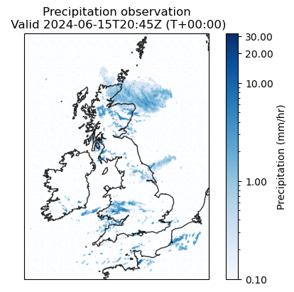
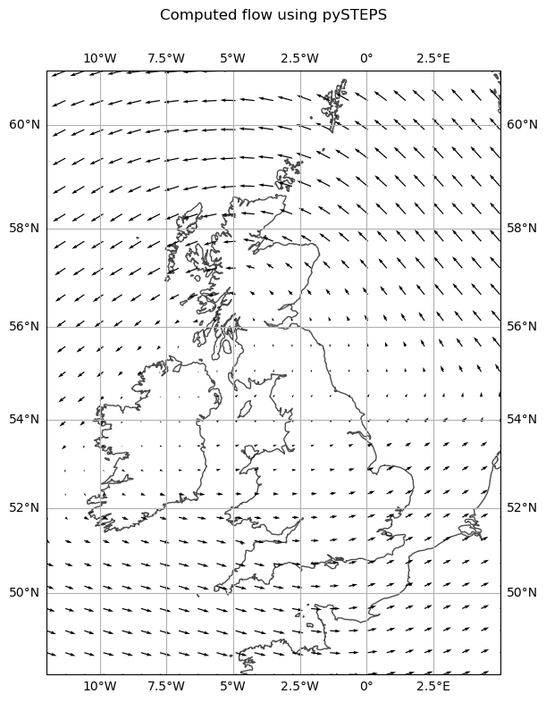
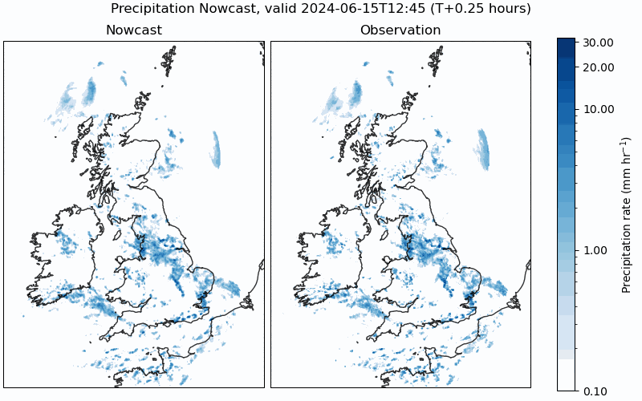

Precipitation Nowcasting
Precipitation Nowcasting
I've been having a go at trying to make a simple "nowcasting" tool for UK precipitation.
Nowcasting is a term used to describe short-term forecasting (typically less than 6 hours ahead).
This has been borne from a (slight) frustration with the Met Office's map tools, where there is often a strong disconnect between where the radar observations stop and the NWP begins.
So I've had a go at seeing if we can do some nowcasting, to predict how the radar observations change with time.
This approach uses pySTEPS, an optical flow method designed with precipitation nowcasting in mind.
It takes a field of rainfall observations (such as the one on the left below), and calculates the motion for that field -- how this field changes with time (shown below on the right).
| 
|

|
| Example precipitation radar observations |
Computed motion of the precipitation, using 12 most recent observations (3hrs) |
So having computed this, we calculate how the precipitation is supposed to move in the future to produce our nowcast.
An example is shown below.

It works reasonably well, degrading over time. Which isn't a surprise.
Several studies have been done into nowcasting precipitation over the UK, but nobody seems to release a forecast openly! Google Deepmind have done it for starters, using a deep learning model but benchmarking it against pySTEPS.
Forecast